The highs and lows of performance evaluation
Towards a measurement theory for machine learning
Why care about measurement?
Measurements are relevant in data science and AI for at least two reasons:
- Features often are measurements on some scale, which dictates admissible statistics and operations.
- E.g., taking the expectation assumes a linear scale.
- Performance metrics are also measurements, and hence the same applies.
This project looked at foundational issues, of which there are many!
Performance measurement is easy…
If I split a data set in two or more parts, is a classifier’s accuracy on the entire data set equal to the average* of the accuracies on the separate parts?
Yes – provided the parts are of equal size (e.g., cross-validation).
What about per-class recall ( = true positive rate)?
Yes – provided the parts have the same class distribution (e.g., stratified CV).
*To be precise: the arithmetic mean.
…or is it?
Is a classifier’s precision on the entire data set equal to the average of the precisions on the parts?
IT IS NOT!
Unless the classifier’s predictions are equally distributed over the classes on each part, which is neither likely nor under the experimenter’s control.
The same applies a fortiori to F-score, which aggregates recall and precision.
An early result: Precision-Recall-Gain curves
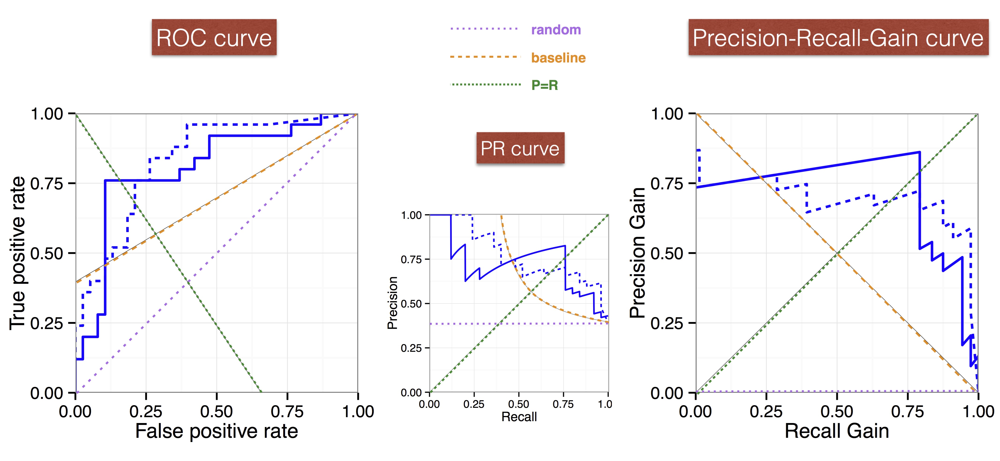from ROC via PR to PRG
Flach, P. and Kull, M., 2015. Precision-recall-gain curves: PR analysis done right. NIPS 2015.
How we fixed it: change of scale
- Take reciprocals: \[ \begin{align} prec &= TP/(TP+FP) \rightarrow 1/prec = 1+FP/TP \\\\ rec &= TP/(TP+FN) \rightarrow 1/rec = 1+FN/TP \\\\ \\ \\\\ \end{align} \]
- Clip \([1,\infty]\) to \([1,1/\pi]\) to exlude overly small values of precision/recall. \[ \begin{align} \\ \\\\ \end{align} \]
- Map \([1,1/\pi]\) back to unit interval: \[ \begin{align} precG &= \frac{prec-\pi}{(1-\pi)prec} = 1 - \frac{\pi}{1-\pi} FP/TP \\\\ recG &= \frac{rec-\pi}{(1-\pi)rec} = 1 - \frac{\pi}{1-\pi} FN/TP \\\\ \end{align} \]
Et voila!
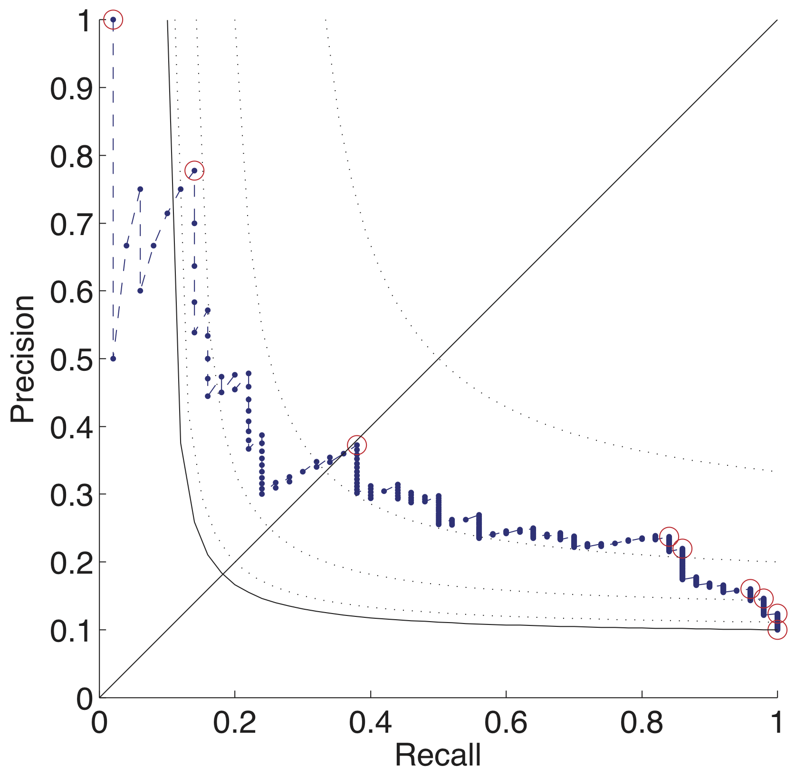 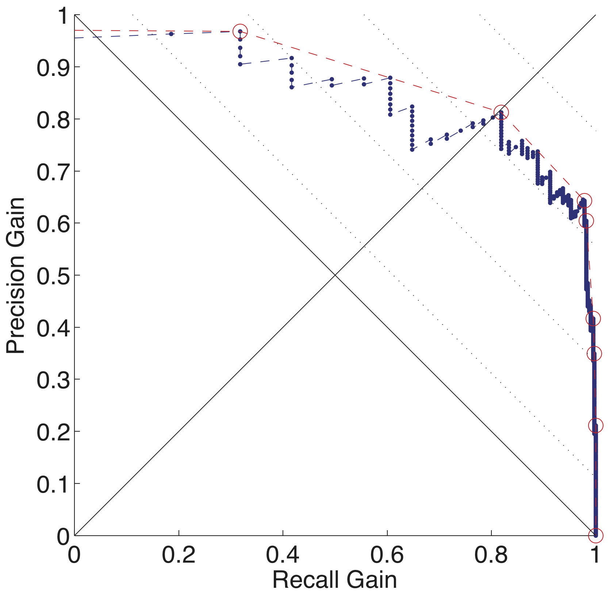
- area under PRG curve \(\propto\) expected \(F_1\) score;
- convex hull can be used to determine the optimal operating point for given precision-recall trade-off.
What I will talk about
- Scales, units, dimensions and types
- Perspectives from psychology, physics and computer science
- You can’t always measure what you want
- Latent variable models
- Conclusions and outlook
Scales, units, dimensions and types
Perhaps surprisingly, there doesn’t seem to be a definitive framework to link all these concepts together.
We’ll look at it from a few perspectives:
Levels of measurement
 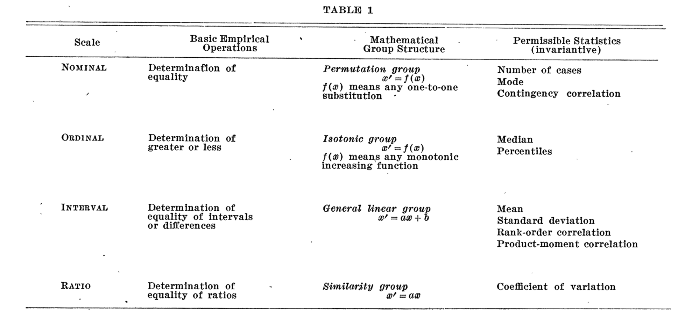
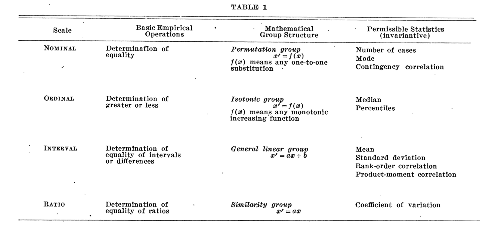
Early proposal from a psychologist (Stevens, 1946), still influential although somewhat rigid and limited.
Stevens’ typology
| Scale type | Description | Transformations |
|---|---|---|
| Nominal | no order, no unit | permutation |
| Ordinal | order, no unit | monotone |
| Interval | can choose unit and zero | affine |
| Ratio | fixed zero, can choose unit | linear |
The appropriate scale type is determined by the transformation furthest down the list which is still “meaningful”.
Admissible statistics
| Scale type | Statistics | |
|---|---|---|
| Nominal | mode | |
| Ordinal | median, quantile, range | |
| Interval | arithmetic mean, variance | |
| Ratio | geometric mean, coefficient of variation |
Each scale type inherits statistics from levels above.
Levels of measurement: discussion
- Many statisticians challenge the rigid connection between scale types and admissible statistics.
- E.g., Spearman’s rank correlation statistic would not be admissible for ordinal data.
- Many common scales do not fit well:
- scales bounded from both sides;
- scales with a fixed unit;
- integer measurements.
Such scales abound in machine learning!
Alternative typologies
Mosteller and Tukey (1977): Names, Grades (e.g., beginner, intermediate, advanced), Ranks (1, 2, …), Counted fractions (e.g., percentages), Counts (non-negative integers), Amounts (non-negative real numbers), Balances (unbounded, positive or negative values).
Chrisman (1998): Nominal, Graded membership (e.g., fuzzy sets), Ordinal, Interval, Log-interval, Extensive ratio, Cyclical ratio (e.g., angles or time of day) Derived ratio, Counts, Absolute (e.g., probabilities).
The physics perspective
- Physical quantities have an associated dimension (Fourier, 1822).
- In order to be compared and added or subtracted, quantities need to be commensurable (have the same dimension).
- Incommensurable quantities may be multiplied and divided, giving new derived dimensions.
- E.g. pressure has dimension \(M L^{-1} T^{-2}\)
- SI units Pascal = Newton/m\(^2\) = kg/(m*s\(^2\)).
Dimensional analysis: discussion
- Dimensions can cancel, leading to dimensionless quantities.
- E.g., angle is a ratio of lengths, hence dimensionless; but it has units (radians, degrees).
- Sometimes units also cancel, e.g. ABV has unit ml ethanol per 100 ml liquid (percentage).
- Transcendental functions (\(\exp\), \(\sin\) etc.) require dimensionless and unitless quantities.
- E.g., \(\log V\) where \(V\) has dimension \(L^3\) should be thought of as \(\log (V/v)\) where \(v\) is the unit of \(V\).
How to build on this in data science and AI?
- Both perspectives (levels of measurement and dimensional analysis) have interesting features but appear overly focused on establishing a ‘true’ scale type or dimension for a measurement.
- Machine learning needs something more flexible.
- In particular, a better treatment of “dimensionless” quantities which are everywhere you look!
- relative frequencies, probabilities, evaluation metrics…
The computer science perspective
- Abstract data types can be adapted to the situation.
- provide relevant meta-data about measurements
- link to useful operations.
- In particular, higher-order functional languages such as Haskell allow reasoning with and about types.
- This provides a formal language and logic for measurement meta-data.
- The challenge is to develop a generally agreed “Systeme international” of ML measurements.
Example: Shannon entropy
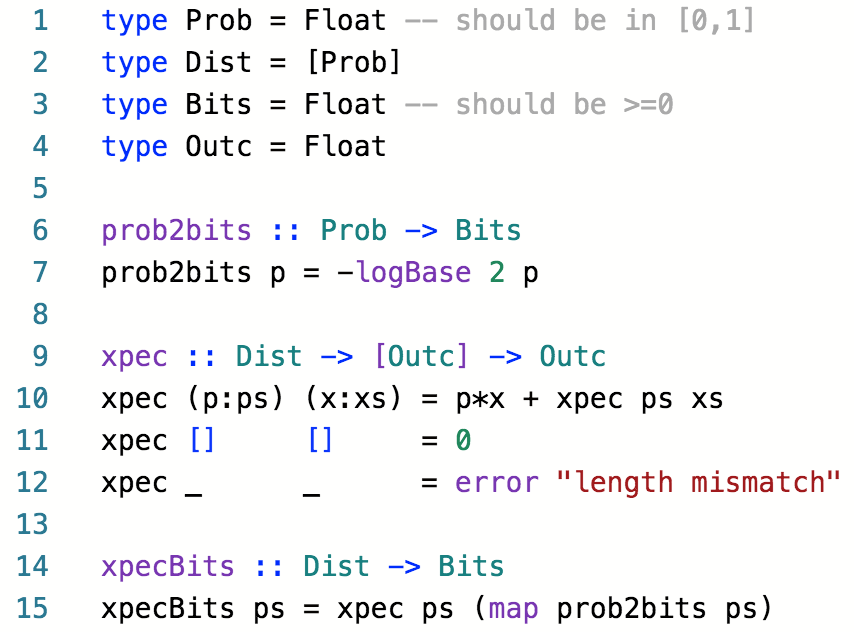Example: Scoring rules
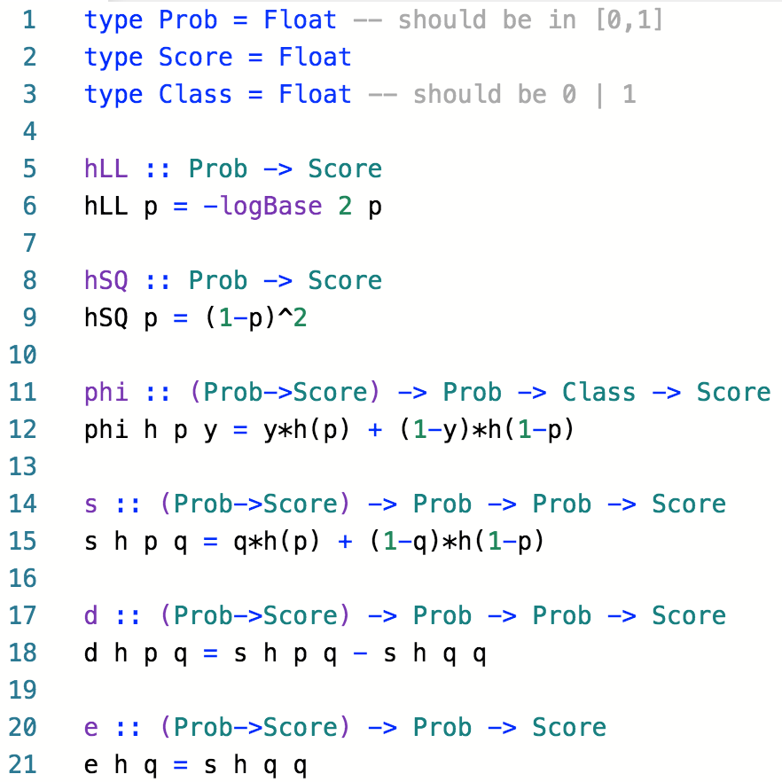You can’t always measure what you want…
- Psychologists have long understood that people’s abilities (and the difficulty of a task) are not directly observable and need to be estimated.
- Item-response theory, factor analysis
- We can adapt those latent variable models to machine learning, to estimate ability of classifiers as well as difficulty of instances and datasets.
IRT from a machine learning perspective
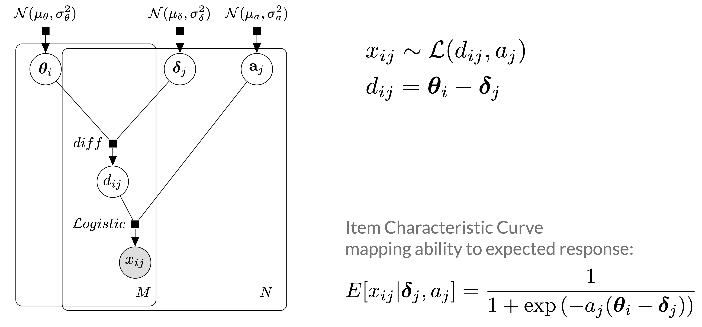
- \(\theta_i\): ability of participant \(i\)
- \(\delta_j\), \(a_j\): difficulty & discrimination of item \(j\)
- \(x_{ij}\): binary response (correct/incorrect)
Beta-IRT
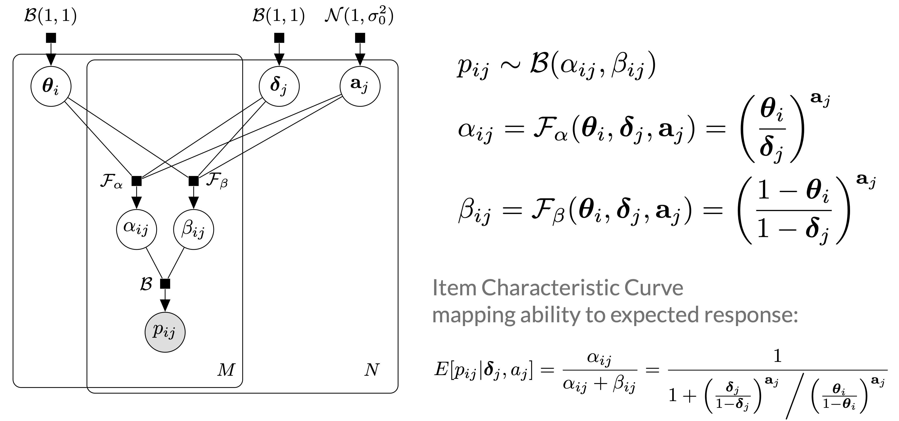
- continuous responses \(p_{ij}\)
- abilities & difficulties \(\in [0,1]\)
Beta-IRT: flexible Item Characteristic Curves
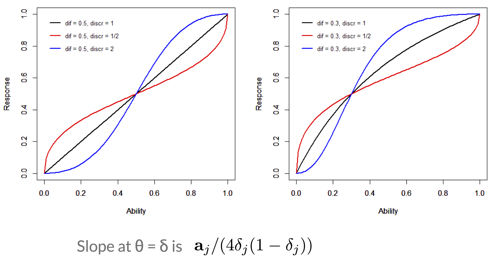
- discrimination \(a_j\) can be negative, indicating an item that confuses high-ability participants!
Idea 1: Identifying noisy examples
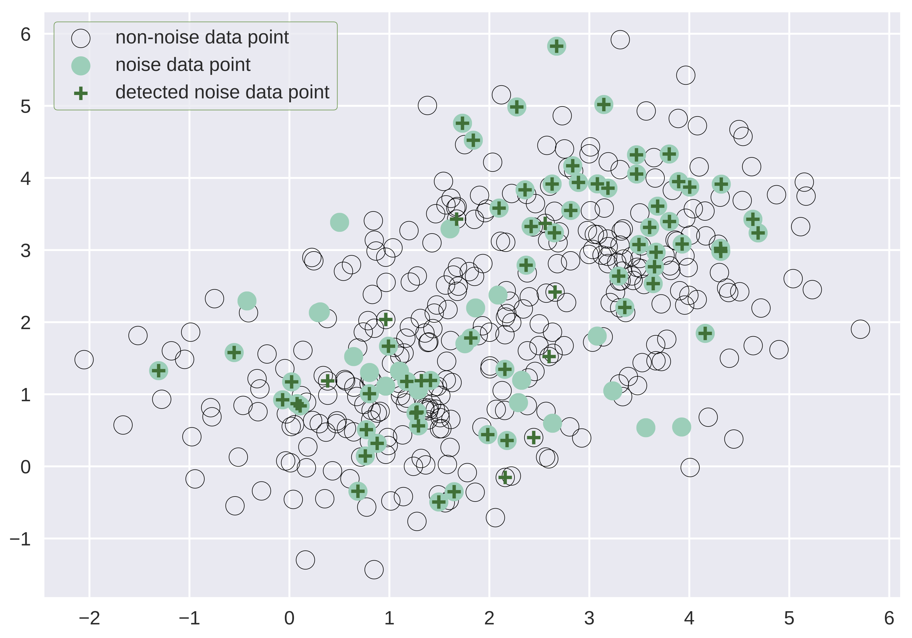
Idea 2: Adaptive testing
Use a trained IRT model to evaluate a new classifier on a small number of datasets.
- Start with initial guess of classifier ability.
- Choose next dataset using an item selection criterion.
- Evaluate classifier and update ability estimation.
- Repeat until stopping criterion is achieved.
CAT results

Outlook
Ultimately, empirical ML needs to make causal statements:
Algorithm A outperformed algorithm B because the classes were highly imbalanced.
- I.e., with re-balanced classes (counterfactual intervention) the difference in performance would disappear.
- NB. In empirical ML we can actually carry out interventions, which makes causal inference a whole lot easier!
Concluding remarks
Proper treatment of performance evaluation in data science and AI requires a sophisticated measurement framework with the following components: - Coherent types and meta-data for the observable performance indicators; - Latent-variable models for the unobservable performance indicators of interest; - Causal models to allow for counterfactual reasoning.
Acknowledgements
Part of this work was funded through a project with the Alan Turing Institute; papers, code and videos can be accessed here.
Many thanks to Hao Song, the Research Associate on the project; and collaborators Jose Hernandez-Orallo, Kacper Sokol, Meelis Kull, Tom Diethe, Yu Chen, Ricardo Prudencio, Telmo Filho, Miquel Perello-Nieto, Raul Santos-Rodriguez and many others.